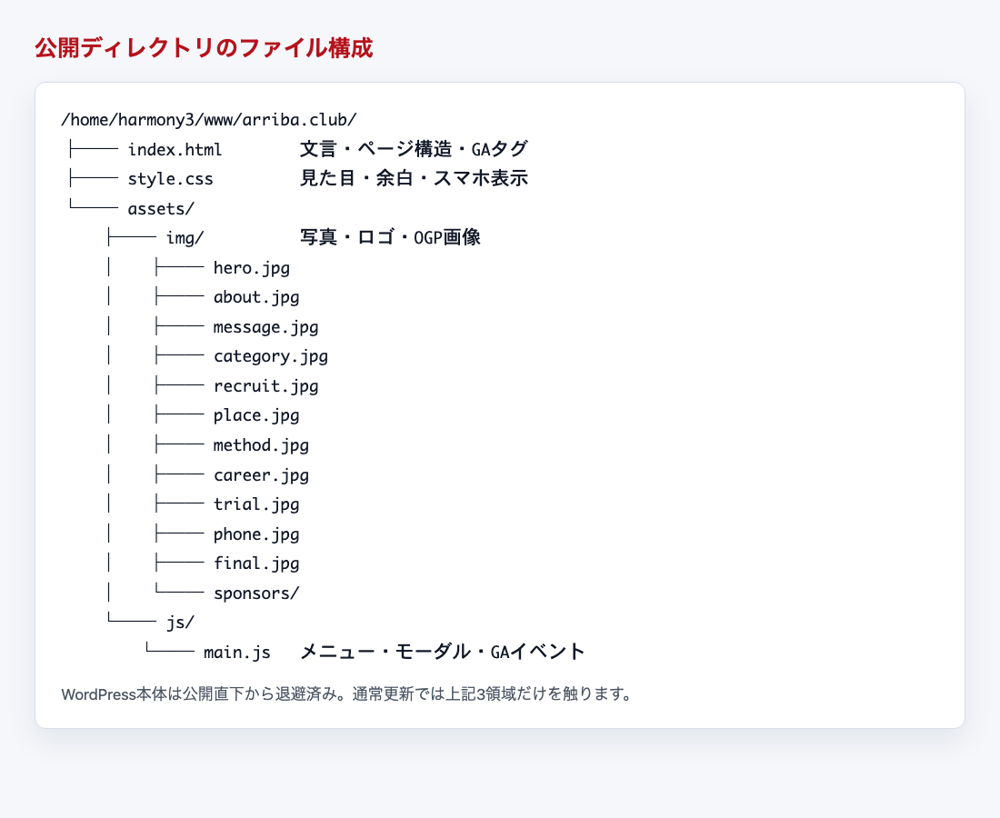
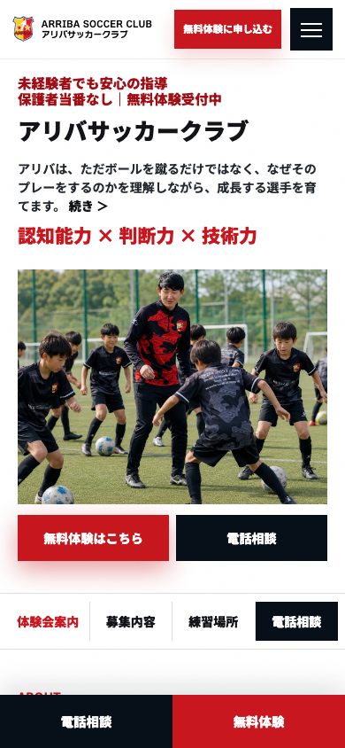
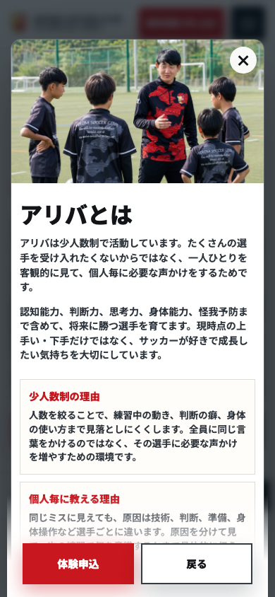
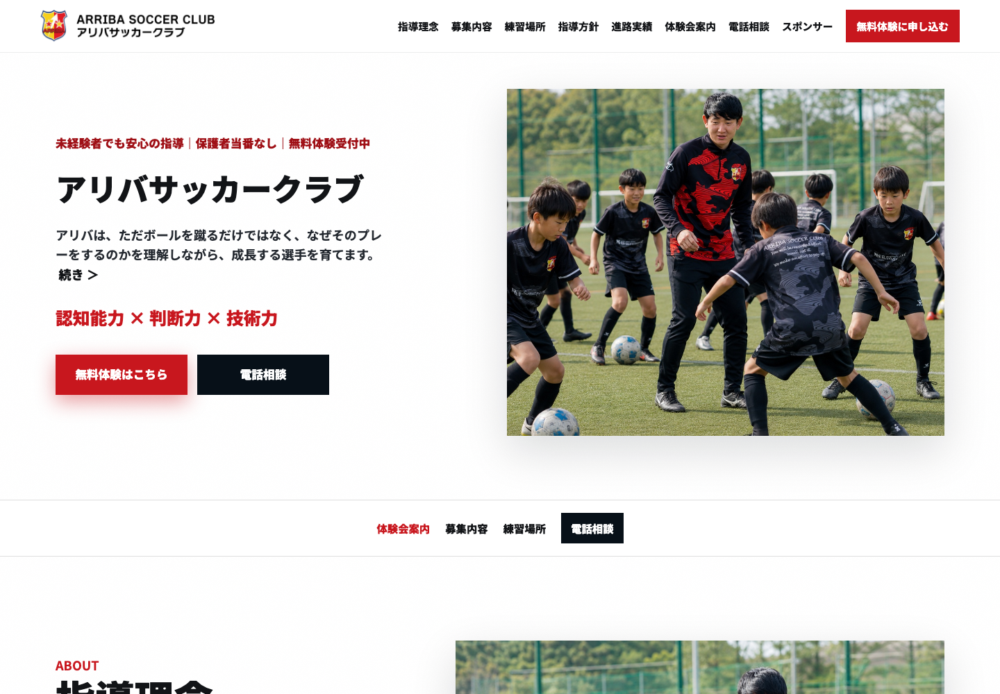

ARRIBA SOCCER CLUB LP
アリバサッカークラブLPを静的HTMLとして更新するための運用メモです。写真・文言の差し替え、ファイル構成、アップロード後の確認項目をまとめています。
通常の更新で触るファイルは、基本的に index.html、style.css、assets/img/、assets/js/main.js です。WordPress本体は公開ディレクトリから退避済みのため、公開側には静的LPのファイルだけが残っています。

| ファイル/フォルダ | 役割 | 主な更新内容 |
|---|---|---|
index.html | LP本文、ページ構造、メタ情報、GA4タグ | 文言変更、リンク変更、タグ追加 |
style.css | デザイン、余白、PC/SPレイアウト | 色、文字サイズ、スマホ調整 |
assets/img/ | LP内で使う写真、ロゴ、OGP画像 | 写真差し替え、スポンサー画像追加 |
assets/js/main.js | メニュー、モーダル、フォーム、GA4イベント | 動作変更、計測イベント変更 |
wp-admin、wp-content、wp-config.php などのWordPressファイルは公開直下には残していません。復旧が必要な場合は、サーバー内バックアップから戻します。写真は同じファイル名で上書きすると、HTMLを書き換えずに差し替えできます。画像サイズは横長写真なら概ね横1200px以上、OGPは現在の比率を維持すると崩れにくいです。
| ファイル名 | 表示箇所 | 差し替え時の注意 |
|---|---|---|
hero.jpg | ファーストビューのメイン写真 | 最重要。人物やボールが中央付近にある写真推奨。 |
about.jpg | 指導理念、アリバとはモーダル | コーチや練習風景が分かる写真。 |
message.jpg | メッセージセクション | 説明・指導中の写真が合います。 |
category.jpg | 活動カテゴリー | 複数選手が写る写真が見やすいです。 |
junior-youth.jpg | ジュニアユース | 中学生年代の写真。 |
junior.jpg | ジュニア | 小学生年代の写真。 |
school.jpg | スクール | スクール活動の写真。 |
recruit.jpg | 募集内容 | 選手募集の印象に合う写真。 |
place.jpg | 練習場所 | グラウンドが分かる写真。 |
method.jpg | 指導方針 | トレーニング中の写真。 |
career.jpg | 進路実績 | 集合・試合・進路訴求に合う写真。 |
trial.jpg | 体験会案内 | 体験参加を促す明るい写真。 |
phone.jpg | 電話相談 | 相談しやすさが伝わる写真。 |
final.jpg | 最終CTA | ページ下部の申込訴求写真。 |
ogp-arriba-trial-2027.jpg | SNS共有時のOGP画像 | 差し替え後、SNSのキャッシュ更新が必要な場合があります。 |
sponsors/ | スポンサー一覧 | ロゴ画像を追加し、HTML側にリンクを追加します。 |
assets/img/hero.jpg。assets/img/ に上書きします。https://arriba.club/?v=check のように末尾へ確認用パラメータを付けて開きます。?v=... を新しい値へ変更すると反映確認しやすくなります。
スマホのファーストビュー。写真の人物位置とCTAの見え方を確認します。

モーダル表示。下部の固定ボタンと本文が重なりすぎないか確認します。
文言は主に index.html に入っています。エディタで対象の文言を検索して、必要な箇所だけを書き換えます。
| 探す文字 | 変更対象 | 注意点 |
|---|---|---|
無料体験 | CTAボタン、申込導線 | 複数箇所にあります。意図しないボタンまで変えないよう確認します。 |
2026年度 | 募集年度 | 年度更新時に複数箇所を検索します。 |
090-9548-4524 | 表示用電話番号 | 電話リンクの tel:09095484524 も合わせて確認します。 |
https://lin.ee/8yWT6iB | LINEリンク | リンク変更時は assets/js/main.js の lineUrl も変更します。 |
G-5YW0V5NV07 | GA4測定ID | 別プロパティへ変更する場合のみ修正します。 |
<section>、<div>、<a> などのタグは削除しない。<br class="soft-break"> はスマホ表示調整に使っています。不要に消さない。href="..." の中身だけを変更する。
体験会セクション。日付、フォーム項目、LINE導線を変更した場合はここを重点確認します。
公開ディレクトリは /home/harmony3/www/arriba.club/ です。更新するファイルだけを上書きします。
例: index.html → /home/harmony3/www/arriba.club/index.html style.css → /home/harmony3/www/arriba.club/style.css assets/img/hero.jpg → /home/harmony3/www/arriba.club/assets/img/hero.jpg assets/js/main.js → /home/harmony3/www/arriba.club/assets/js/main.js
GA4タグは index.html の <head> 内に設置済みです。測定IDは G-5YW0V5NV07 です。
| イベント名 | 発火条件 | 用途 |
|---|---|---|
trial_cta_click | 無料体験CTAクリック | 体験導線のクリック数確認 |
phone_click | 電話相談クリック | 電話問い合わせ意欲の確認 |
line_click | LINEリンククリック | LINE問い合わせ意欲の確認 |
trial_form_start | 体験フォーム入力開始 | フォーム到達後の入力開始確認 |
trial_form_submit | 問い合わせ内容作成ボタン送信 | 主要キーイベント候補 |
modal_open | 「続き」モーダル開封 | 興味セクションの確認 |
trial_form_submit、line_click、phone_click です。イベント名はLP側から送信されるため、GA4の「コードなしで作成」は必須ではありません。WordPress本体とデータベースはサーバー内に退避済みです。通常の写真・文言更新では触りません。
WordPressバックアップ: /home/harmony3/_backup_wp_arriba_20260527_094451/ 含まれるもの: wp-admin/ wp-content/ wp-includes/ wp-config.php .htaccess wp-login.php database.sql.gz